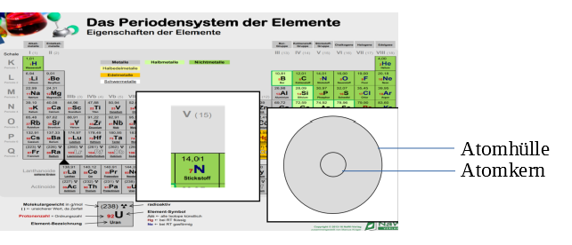
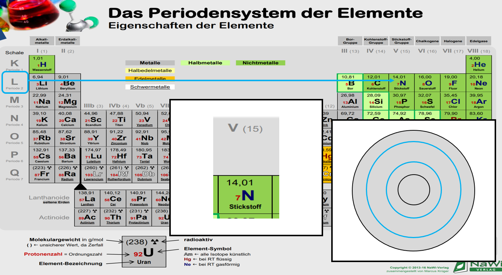
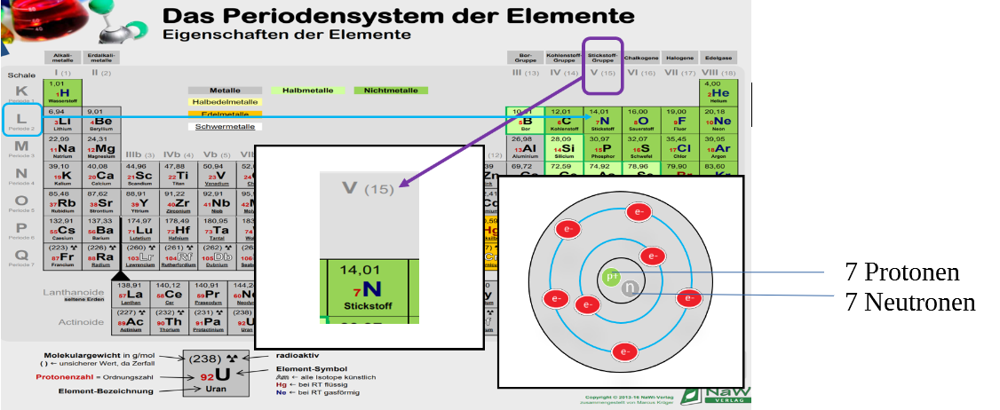

Wie oben schon einmal erwähnt, werden wir euch jetzt das Schalenmodell näherbringen. Dies ist jedoch nur ein Denkmodell zum besseren Verstehen.
Um wieder auf unser Beispiel zurückzukommen, werden wir euch dies anhand von Stickstoff erläutern. Das Modell ist aufgebaut aus Atomhülle und Atomkern. Im Periodensystem kann man am Anfang der jeweiligen Periode ablesen, wie viele Schalen das jeweilige Element besitzt. Im Fall von Stickstoff ist dies also 2, das heißt es gibt 2 mit Elektronen besetzte Schalen. Die Elektronen sind auf den verschiedenen Schalen angebracht.
Die Hauptgruppe gibt an, wie viele Elektronen auf der äußeren Schale kreisen. Diese nennt man auch Valenzelektronen oder einfach Außenelektronen. Im Fall von Stickstoff ist dies die Hauptgruppe 5 (wird oft in römischen Zahlen angegeben), das heißt auf der äußeren Schale kreisen 5 von den 7 Elektronen und auf der ersten Schale somit 2, damit alle Elektronen untergebracht sind.
Im Kern sind, wie wir anhand der Ordnungszahl sehen können, 7 Protonen und wenn wir die Atommasse, also 14 minus die Ordnungszahl, also 7 rechnen, kommen wir auf 7 Neutronen.
In der oberen Ecke ist die Atommasse abzulesen. Sie wird in der Einheit klein „u“ angegeben. Das kleine u steht für die atomare Masseneinheit „Unit“ und ist somit eine Einheit der Masse. 1u entspricht 1,661 10 -27 kg, also wie man erkennen kann ist so ein Atom wirklich richtig leicht.
In der linken unteren Ecke des Kästchens oder in unserem Fall in der Mitte vor dem Symbol (N), ist die Ordnungszahl zu entnehmen, also 7. Diese nummeriert nicht nur die Elemente durch, sondern gibt auch die Anzahl von Protonen im Kern an, sowie die Anzahl von Elektronen. Wenn man nun die Atommasse, also 14 minus die Ordnungszahl, bei uns 7 rechnet, kommen wir auch schon auf die Neutronenzahl 7.
< Letzte Seite Nächste Seite >